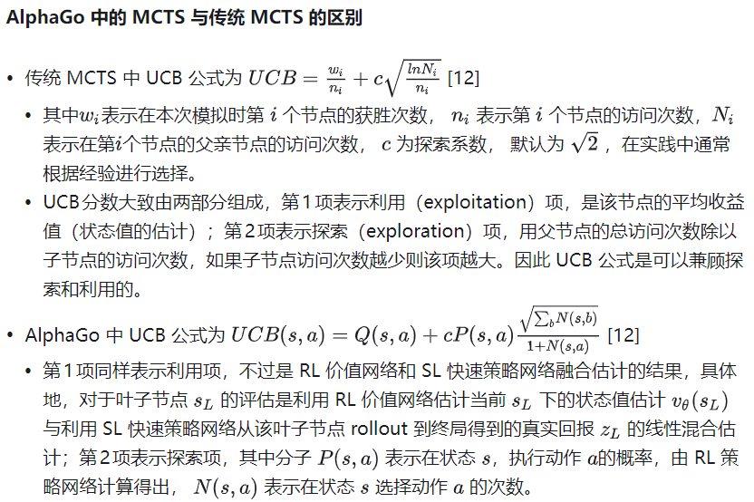

黑白棋AI-miniZero
源码近期让AI整理一下再上传到GitHub吧，自己的文件结构略微有些混乱......不过效果还是不错的~
知识背景¶
蒙特卡洛方法¶
蒙特卡洛方法(Monte Carlo method)，是一种“统计模拟方法”。20世纪40年代，为建造核武器，冯.诺伊曼 等人发明了该算法。因赌城蒙特卡洛而得名，暗示其以概率作为算法的基础。
假设我们要计算一个不规则形状的面积，我们只需在包含这个不规则形状的矩形内，随机的掷出一个点，每掷出一个点，则N+1，如果这个点在不规则图形内则W+1。落入不规则图形的概率即为 W/N。当掷出足够多的点之后，我们可以认为：不规则图形面积＝矩形面积＊W/N。
蒙特卡洛树搜索(MCTS)¶
1987年Bruce Abramson在他的博士论文中提出了基于蒙特卡洛方法的树搜索这一想法。这种算法简而言之是用蒙特卡洛方法估算每一种走法的胜率。如果描述的再具体一些，通过不断的模拟每一种走法，直至终局，该走法的模拟总次数N，与胜局次数W，即可推算出该走法的胜率为 W/N。通过随机的对游戏进行推演来逐渐建立一棵不对称的搜索树的过程。
一些写的很好的文章，都介绍了基础的MCTS：
直观地说，我们平时下棋有时也会考虑我们下了这步棋后，对手大概率会怎么下，这样下后的局面又会如何，我们总不能臆想对手下一步非常不好的棋。此外，这里涉及到非常重要的一个概念：视角。
当我们有多个落子位置可选时，当然会希望选择胜率最大的位置，同样，对手也会希望选择他胜率最大的位置。首要的问题是，我们该如何确定这个胜率？
蒙特卡洛的核心思想是概率，用模拟来推断实际，我们可以在当前的棋盘状态下进行一定数量的模拟对局(rollout)，用他们终局的胜负或者其他合理的评判标准（如黑白棋的棋子数差）来给出当前节点的先验胜率or先验价值。
为了让模拟更有意义，我们需要有方向的模拟，也就是在下一步中，在对方的视角下，我们希望模拟对方胜率较高的落子，重要的是，对这些落子模拟的结果，也会实时的更新父节点的胜率/价值上，这是MCTS全局和局部结合的关键：只要树探索到了底部（叶子），就开始rollout模拟，然后将结果回传给上层节点，更新这些节点的胜率/平均价值估计。最终在当前需要落子的节点下，给出胜率/平均价值最高的落子。
还有一些细节需要注意：实际上在选择节点模拟时不单单要看胜率，还要考虑探索性exploration，所以说往往在选择阶段MCTS都要用到UCT公式，这个公式综合考虑了胜率和探索性，从而在选择节点时，既能选择胜率高的节点，也能选择一些访问次数较少的节点进行探索。
提取并总结一下，选择阶段的作用是：选择出一条未来更可能发生的路径。 而拓展、模拟、反向传播三个阶段则是通过这条路径，对第一级子节点的胜率进行调整，参入对敌我动向的分析，使该胜率更可信。
MCTS with NN¶
TBH, 基础的MCTS在这次的黑白棋中已经表现的很厉害了，在模拟400步时，我和它下棋就已经很吃力了（当然我水平也有限，甚至可以说和他下棋我也学到了很多）。在mo平台的测试中，基础的mcts在模拟1000步的情况下也是顺利击败了高级玩家。

但是，总觉得它还不够智能，虽然MCTS的算法非常美妙，也并非全部依靠rollout来评估局面，但一是耗时较多，二是通过模拟很多局来获得所谓局面评估，这与人类的“棋感”还是有差距的。于是乎，神经网络可以登场了：通过输入此时棋盘的状态，输出所有的合法动作进行量化的评估价值，选择价值高的落子，这是我开始的直观想法，后来阅读材料后发现这叫raw network并且当时实际上AlphaGo也尝试用了raw network，效果也很好，不过震惊世界的AlphaGo Zero的核心算法其实是把神经网络和MCTS结合起来，MCTS可以被理解为一个强有力的策略改善的过程。
普通的MCTS在到达叶节点时，进行rollout模拟来评估局面，而结合神经网络的MCTS则是用神经网络来评估局面，从而大大提升了评估的效率。具体来说，神经网络会输出两个值：一个是策略向量，表示每个合法动作的概率分布；另一个是价值标量，表示当前局面的期望结果。在选择叶节点时，用到类似于UCT的评判公式PUCT： $$ a_t = \arg\max_a \left( Q(s,a) + c_{puct} \cdot P(s,a) \cdot \frac{\sqrt{N(s)}}{1 + N(s,a)} \right) $$ ，同样是平衡了探索性和利用性。
而神经网络的训练数据，则是来源于自我对弈产生的三元组 (s_t, π_t, z)，其中 s_t 是当前局面，π_t 是MCTS搜索得到的动作分布，z 是最终的游戏结果。训练的损失函数包括价值损失、策略损失和L2正则化: $$ L = (z - v)^2 - \boldsymbol{\pi}^\top \log \mathbf{p} + c|\theta|^2 $$
在深入到技术细节之前，最后再用我的理解表达一下MCTS with NN究竟是怎么工作的：
首先是自对弈收集数据到数据(s, π, z)三元组，s表示当前的局面状态，π表示用当前的网络进行mcts后得到的各个动作的访问概率分布，z表示最终的胜负结果。
然后把这些数据放到神经网络进行训练，开始神经网络是随机初始化的，所以此时的价值和策略都是在随机预测，那么模拟出来的对局基本等同于随机对局（有一点rollout的感觉），但是由于就算是随机模拟，其胜负结果也是有意义的，模型在价值的预测上会慢慢准确，从而在选择阶段也会慢慢多选那些终局是胜利（价值高）的情况，同时也会促使模型在策略上学习（因为输出的策略不再那么的随机），于是给出的先验概率越来越具有参考意义。整体来看，这是一个不断循环，相辅相成的过程。
技术细节¶
棋盘状态编码¶
# policy_value_net.py
def encode_board(board, color):
"""
将棋盘编码为 3 个 8×8 平面
"""
opp = 'O' if color == 'X' else 'X'
state = np.zeros((3, 8, 8), dtype=np.float32)
for x in range(8):
for y in range(8):
c = board._board[x][y]
if c == color:
state[0, x, y] = 1.0 # 平面0：我方棋子
elif c == opp:
state[1, x, y] = 1.0 # 平面1：对方棋子
if color == 'X':
state[2, :, :] = 1.0 # 平面2：是否是黑棋视角
return state
自对弈¶
黑白棋、五子棋、围棋这类游戏都有着对称性，所以我们可以增强数据集：
def get_equi_data(self, play_data):
"""数据对称增强2*4=8"""
extend_data = []
for state, mcts_prob, winner in play_data:
state = np.array(state)
mcts_prob = np.array(mcts_prob)
for i in range(4):
equi_state = np.array([np.rot90(s, i) for s in state])
equi_prob = np.rot90(mcts_prob, i)
extend_data.append((equi_state, equi_prob, winner))
equi_state_flip = np.array([np.fliplr(s) for s in equi_state])
equi_prob_flip = np.fliplr(equi_prob)
extend_data.append((equi_state_flip, equi_prob_flip, winner))
return extend_data
可以看到，state和prob同时旋转翻转，winner保持不变。
假设一盘棋走了 5 步，黑棋(X)赢了：
| 步骤 | 执行者 | 状态 | MCTS概率分布 | 最终结果 |
|---|---|---|---|---|
| 1 | X | s₁ | π₁ | z=+1 |
| 2 | O | s₂ | π₂ | z=-1 |
| 3 | X | s₃ | π₃ | z=+1 |
| 4 | O | s₄ | π₄ | z=-1 |
| 5 | X | s₅ | π₅ | z=+1 |
共享同一盘棋的结果
原始数据: 5 个三元组
增强后: 5 × 8 = 40 个训练样本
数据流AI总结¶
| 阶段 | 操作 | 输出格式 |
|---|---|---|
| 状态编码 | encode_board(board, color) |
(3, 8, 8) 张量 |
| MCTS搜索 | mcts.get_move_probs(...) |
(8, 8) 概率分布 |
| 记录执棋方 | player = color |
'X' 或 'O' |
| 游戏结束 | 根据胜负填充 z | +1 / -1 / 0 |
| 数据增强 | 旋转4次 × 翻转2次 | 8倍扩增 |
| 单局产出 | 约40步 × 8倍增强 | ≈320条数据 |
| 数据格式 | (state, prob, z) |
((3,8,8), (8,8), float) |
| 缓冲区 | 最大容量20000条 | FIFO淘汰旧数据 |
| 训练采样 | random.sample(buffer, 512) |
512条/批次 |
PUCT公式¶
PUCT（Predictor Upper Confidence Bound applied to Trees）是 AlphaGo/AlphaZero 中用于节点选择的核心公式，它在传统 UCT 的基础上引入了神经网络的先验概率。
定义¶
$$ a_t = \arg\max_a \left( Q(s,a) + U(s,a) \right) $$ 其中探索项 U 定义为：
符号说明¶
| 符号 | 含义 | 来源 |
|---|---|---|
| \(Q(s,a)\) | 动作 a 的平均价值估计 | MCTS 搜索统计 |
| \(P(s,a)\) | 动作 a 的先验概率 | 神经网络策略输出 |
| \(N(s)\) | 父节点的访问次数 | \(\sum_b N(s,b)\) |
| \(N(s,a)\) | 子节点的访问次数 | MCTS 搜索统计 |
| \(c_{\text{puct}}\) | 探索常数 | 超参数，通常取 1~5 |
两项的理解¶
利用项 Q(s,a)：
- 该动作历史上的平均回报（注意，回报也是神经网络预测的胜负）
- 倾向于选择已知的好动作
探索项 U(s,a)：
- 鼓励尝试访问次数少的动作
- P(s,a) 大 → 神经网络认为这是好棋 → 优先探索
- N(s,a) 小 → 访问次数少 → 值得探索
- N(s) 大 → 父节点访问多 → 该多探索子节点了
AI生成的动态行为演示¶
假设某节点有 3 个子动作，初始状态：
初始 (N_parent = 0):
┌────────┬───────┬───────┬───────┬───────┬─────────┐
│ Action │ P(s,a)│ N(s,a)│ Q(s,a)│ U │ Score │
├────────┼───────┼───────┼───────┼───────┼─────────┤
│ A │ 0.6 │ 0 │ 0 │ ∞ │ ∞ │ ← 先选 P 最大的
│ B │ 0.3 │ 0 │ 0 │ ∞ │ ∞ │
│ C │ 0.1 │ 0 │ 0 │ ∞ │ ∞ │
└────────┴───────┴───────┴───────┴───────┴─────────┘
模拟 10 次后 (假设 c_puct=5):
┌────────┬───────┬───────┬───────┬───────┬─────────┐
│ Action │ P(s,a)│ N(s,a)│ Q(s,a)│ U │ Score │
├────────┼───────┼───────┼───────┼───────┼─────────┤
│ A │ 0.6 │ 6 │ 0.3 │ 1.37 │ 1.67 │
│ B │ 0.3 │ 3 │ 0.5 │ 1.19 │ 1.69 │ ← Q 高，开始胜出
│ C │ 0.1 │ 1 │ -0.2 │ 0.79 │ 0.59 │
└────────┴───────┴───────┴───────┴───────┴─────────┘
模拟 100 次后:
┌────────┬───────┬───────┬───────┬───────┬─────────┐
│ Action │ P(s,a)│ N(s,a)│ Q(s,a)│ U │ Score │
├────────┼───────┼───────┼───────┼───────┼─────────┤
│ A │ 0.6 │ 30 │ 0.25 │ 0.97 │ 1.22 │
│ B │ 0.3 │ 60 │ 0.55 │ 0.24 │ 0.79 │
│ C │ 0.1 │ 10 │ -0.1 │ 0.45 │ 0.35 │
└────────┴───────┴───────┴───────┴───────┴─────────┘
↑
U 项衰减，Q 项主导选择
探索机制¶
温度采样¶
MCTS 搜索结束后，每个动作有一个访问次数 \(N(a)\)。如何从中选择动作？ $$ \pi(a) = \frac{N(a)^{1/\tau}}{\sum_b N(b)^{1/\tau}} $$
其中 \(\tau\) 是温度参数。
举个例子就理解了：假设有 3 个动作，访问次数分别为 \(N = [100, 50, 10]\)：
| 温度 τ | 计算过程 | 概率分布 π | 特点 |
|---|---|---|---|
| τ → ∞ | \(N^0 = [1,1,1]\) | [0.33, 0.33, 0.33] | 完全均匀 |
| τ = 1 | \(N^1 = [100, 50, 10]\) | [0.625, 0.3125, 0.0625] | 按比例 |
| τ → 0 | \(N^∞\) | [1, 0, 0] | 确定性选择最大 |
也就是说，在前面30步时（temp_threshold=30），temp=1，实际走的是按比例采样，增加探索性；而在后面时，temp趋近于0，基本上选择访问次数最多的动作，保证利用性，以防在开局阶段太过雷同。
# mcts_nn.py
def get_move_probs(self, board, color, temp=1.0, self_play=False):
# ... MCTS 搜索完成后 ...
visits = np.array(visits, dtype=np.float32)
if temp < 1e-3:
# 低温：直接选最大
best_idx = np.argmax(visits)
probs = np.zeros_like(visits)
probs[best_idx] = 1.0
else:
# 高温：按比例采样
# 使用 log 技巧避免数值溢出
log_visits = np.log(visits + 1e-10)
log_visits_scaled = log_visits / temp
log_visits_scaled = log_visits_scaled - np.max(log_visits_scaled) # 数值稳定
probs = np.exp(log_visits_scaled)
probs = probs / probs.sum()
# 按概率采样动作
if temp < 1e-3:
move = acts[np.argmax(probs)]
else:
move = np.random.choice(acts, p=probs)
Dirichlet噪声¶
原文：

在根节点的先验概率 \(P(s,a)\) 上添加噪声： $$ P'(s,a) = (1 - \varepsilon) \cdot P(s,a) + \varepsilon \cdot \eta_a $$
其中：
- \(\varepsilon\) 是噪声权重，通常取 0.25
- \(\eta \sim \text{Dir}(\alpha)\) 是 Dirichlet 分布采样的噪声
为什么只在根节点加噪声？
AI生成的，说的很好：
┌─ root (加噪声) ─────────────────────────────────┐
│ 这里决定了这一步走哪里 │
│ 需要探索"神经网络可能没想到"的走法 │
├─────────────────────────────────────────────────┤
│ ├── child_1 (不加噪声) │
│ │ └── ... │
│ ├── child_2 (不加噪声) │
│ │ └── ... │
│ └── child_3 (不加噪声) │
│ └── ... │
│ │
│ 子节点代表对手或未来的自己 │
│ 我们假设他们会"理性"地下棋 │
│ 不需要人为加噪声 │
└─────────────────────────────────────────────────┘
两者的区别与互补¶
| 特性 | Dirichlet 噪声 | 温度采样 |
|---|---|---|
| 作用位置 | MCTS 搜索之前 | MCTS 搜索之后 |
| 影响对象 | 先验概率 P(s,a) | 访问分布 N(a) |
| 目的 | 让搜索探索更多分支 | 让选择更加随机 |
| 何时使用 | 仅自对弈 | 仅自对弈 |
| 随步数变化 | 不变 | 前30步高温，之后低温 |